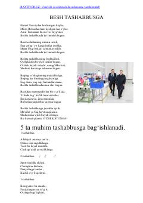

5TBeshta muhim tashabbusga bag'ishlangan ibratli va tarbiyaviy she'rlar to'plami.
Mazkur to'plam O'zbekiston Respublikasi Prezidenti ilgari surgan beshta muhim tashabbusga bag'ishlangan she'rlarni o'z ichiga oladi. Kitobda yoshlarning ta'lim olishi, san'at, sport, axborot texnologiyalari va kitobxonlikka bo'lgan qiziqishlarini oshirishga qaratilgan tarbiyaviy mazmundagi she'rlar jamlangan.